While improving the speed of user-facing applications is the end goal of performance engineering, people don’t really get excited over 5-10% improvements in some databases. Yes, this is what software engineers are paid for, but these types of optimizations tend to be too intricate and system-specific to be readily generalized to other software.
Instead, the most fascinating showcases of performance engineering are multifold optimizations of textbook algorithms: the kinds that everybody knows and deemed so simple that it would never even occur to try to optimize them in the first place. These optimizations are simple and instructive and can very much be adopted elsewhere. And they are surprisingly not as rare as you’d think.
In this section, we focus on one such fundamental algorithm — binary search — and implement two of its variants that are, depending on the problem size, up to 4x faster than std::lower_bound, while being under just 15 lines of code.
The first algorithm achieves that by removing branches, and the second also optimizes the memory layout to achieve better cache system performance. This technically disqualifies it from being a drop-in replacement for std::lower_bound as it needs to permute the elements of the array before it can start answering queries — but I can’t recall a lot of scenarios where you obtain a sorted array but can’t afford to spend linear time on preprocessing.
The usual disclaimer: the CPU is a Zen 2, the RAM is a DDR4-2666, and the compiler we will be using by default is Clang 10. The performance on your machine may be different, so I highly encourage to go and test it for yourself.
#Binary Search
Here is the standard way of searching for the first element not less than x in a sorted array t of n integers that you can find in any introductory computer science textbook:
int lower_bound(int x) {
int l = 0, r = n - 1;
while (l < r) {
int m = (l + r) / 2;
if (t[m] >= x)
r = m;
else
l = m + 1;
}
return t[l];
}
Find the middle element of the search range, compare it to x, shrink the range in half. Beautiful in its simplicity.
A similar approach is employed by std::lower_bound, except that it needs to be more generic to support containers with non-random-access iterators and thus uses the first element and the size of the search interval instead of the two of its ends. To this end, implementations from both Clang and GCC use this metaprogramming monstrosity:
template <class _Compare, class _ForwardIterator, class _Tp>
_LIBCPP_CONSTEXPR_AFTER_CXX17 _ForwardIterator
__lower_bound(_ForwardIterator __first, _ForwardIterator __last, const _Tp& __value_, _Compare __comp)
{
typedef typename iterator_traits<_ForwardIterator>::difference_type difference_type;
difference_type __len = _VSTD::distance(__first, __last);
while (__len != 0)
{
difference_type __l2 = _VSTD::__half_positive(__len);
_ForwardIterator __m = __first;
_VSTD::advance(__m, __l2);
if (__comp(*__m, __value_))
{
__first = ++__m;
__len -= __l2 + 1;
}
else
__len = __l2;
}
return __first;
}
If the compiler is successful in removing the abstractions, it compiles to roughly the same machine code and yields roughly the same average latency, which expectedly grows with the array size:
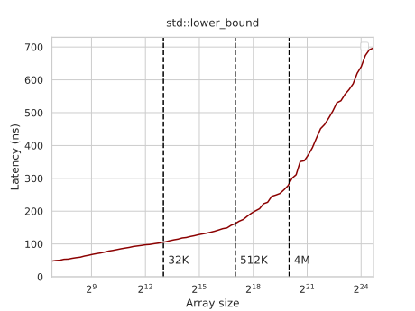
Since most people don’t implement binary search by hand, we will use std::lower_bound from Clang as the baseline.
#The Bottleneck
Before jumping to the optimized implementations, let’s briefly discuss why binary search is slow in the first place.
If you run std::lower_bound with perf, you’ll see that it spends most of its time on a conditional jump instruction:
│35: mov %rax,%rdx
0.52 │ sar %rdx
0.33 │ lea (%rsi,%rdx,4),%rcx
4.30 │ cmp (%rcx),%edi
65.39 │ ↓ jle b0
0.07 │ sub %rdx,%rax
9.32 │ lea 0x4(%rcx),%rsi
0.06 │ dec %rax
1.37 │ test %rax,%rax
1.11 │ ↑ jg 35
This pipeline stall stops the search from progressing, and it is mainly caused by two factors:
- We suffer a control hazard because we have a branch that is impossible to predict (queries and keys are drawn independently at random), and the processor has to halt for 10-15 cycles to flush the pipeline and fill it back on each branch mispredict.
- We suffer a data hazard because we have to wait for the preceding comparison to complete, which in turn waits for one of its operands to be fetched from the memory — and it may take anywhere between 0 and 300 cycles, depending on where it is located.
Now, let’s try to get rid of these obstacles one by one.
#Removing Branches
We can replace branching with predication. To make the task easier, we can adopt the STL approach and rewrite the loop using the first element and the size of the search interval (instead of its first and last element):
int lower_bound(int x) {
int *base = t, len = n;
while (len > 1) {
int half = len / 2;
if (base[half - 1] < x) {
base += half;
len = len - half;
} else {
len = half;
}
}
return *base;
}
Note that, on each iteration, len is essentially just halved and then either floored or ceiled, depending on how the comparison went. This conditional update seems unnecessary; to avoid it, we can simply say that it’s always ceiled:
int lower_bound(int x) {
int *base = t, len = n;
while (len > 1) {
int half = len / 2;
if (base[half - 1] < x)
base += half;
len -= half; // = ceil(len / 2)
}
return *base;
}
This way, we only need to update the first element of the search interval with a conditional move and halve its size on each iteration:
int lower_bound(int x) {
int *base = t, len = n;
while (len > 1) {
int half = len / 2;
base += (base[half - 1] < x) * half; // will be replaced with a "cmov"
len -= half;
}
return *base;
}
Note that this loop is not always equivalent to the standard binary search. Since it always rounds up the size of the search interval, it accesses slightly different elements and may perform one comparison more than needed. Apart from simplifying computations on each iteration, it also makes the number of iterations constant if the array size is constant, removing branch mispredictions completely.
As typical for predication, this trick is very fragile to compiler optimizations — depending on the compiler and how the function is invoked, it may still leave a branch or generate suboptimal code. It works fine on Clang 10, yielding a 2.5-3x improvement on small arrays:
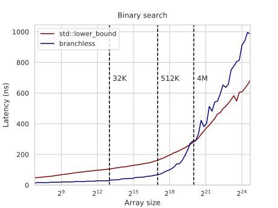
One interesting detail is that it performs worse on large arrays. It seems weird: the total delay is dominated by the RAM latency, and since it does roughly the same memory accesses as the standard binary search, it should be roughly the same or even slightly better.
The real question you need to ask is not why the branchless implementation is worse but why the branchy version is better. It happens because when you have branching, the CPU can speculate on one of the branches and start fetching either the left or the right key before it can even confirm that it is the right one — which effectively acts as implicit prefetching.
For the branchless implementation, this doesn’t happen, as cmov is treated as every other instruction, and the branch predictor doesn’t try to peek into its operands to predict the future. To compensate for this, we can prefetch the data in software by explicitly requesting the left and right child key:
int lower_bound(int x) {
int *base = t, len = n;
while (len > 1) {
int half = len / 2;
len -= half;
__builtin_prefetch(&base[len / 2 - 1]);
__builtin_prefetch(&base[half + len / 2 - 1]);
base += (base[half - 1] < x) * half;
}
return *base;
}
With prefetching, the performance on large arrays becomes roughly the same:
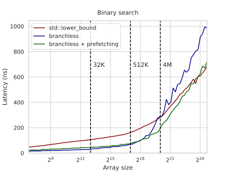
The graph still grows faster as the branchy version also prefetches “grandchildren,” “great-grandchildren,” and so on — although the usefulness of each new speculative read diminishes exponentially as the prediction is less and less likely to be correct.
In the branchless version, we could also fetch ahead by more than one layer, but the number of fetches we’d need also grows exponentially. Instead, we will try a different approach to optimize memory operations.
#Optimizing the Layout
The memory requests we perform during binary search form a very specific access pattern:
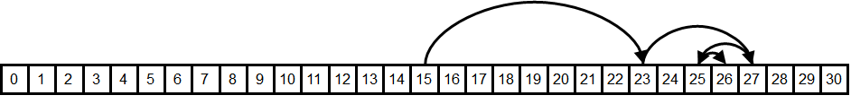
How likely is it that the elements on each request are cached? How good is their data locality?
- Spatial locality seems to be okay for the last 3 to 4 requests that are likely to be on the same cache line — but all the previous requests require huge memory jumps.
- Temporal locality seems to be okay for the first dozen or so requests — there aren’t that many different comparison sequences of this length, so we will be comparing against the same middle elements over and over, which are likely to be cached.
To illustrate how important the second type of cache sharing is, let’s try to pick the element we will compare to on each iteration randomly among the elements of the search interval, instead of the middle one:
int lower_bound(int x) {
int l = 0, r = n - 1;
while (l < r) {
int m = l + rand() % (r - l);
if (t[m] >= x)
r = m;
else
l = m + 1;
}
return t[l];
}
Theoretically, this randomized binary search is expected to do 30-40% more comparisons than the normal one, but on a real computer, the running time goes ~6x on large arrays:
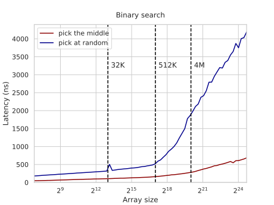
This isn’t just caused by the rand() call being slow. You can clearly see the point on the L2-L3 boundary where memory latency outweighs the random number generation and modulo. The performance degrades because all of the fetched elements are unlikely to be cached and not just some small suffix of them.
Another potential negative effect is that of cache associativity. If the array size is a multiple of a large power of two, then the indices of these “hot” elements will also be divisible by some large powers of two and map to the same cache line, kicking each other out. For example, binary searching over arrays of size $2^{20}$ takes about ~360ns per query while searching over arrays of size $(2^{20} + 123)$ takes ~300ns — a 20% difference. There are ways to fix this problem, but to not get distracted from more pressing matters, we are just going to ignore it: all array sizes we use are in the form of $\lfloor 1.17^k \rfloor$ for integer $k$ so that any cache side effects are unlikely.
The real problem with our memory layout is that it doesn’t make the most efficient use of temporal locality because it groups hot and cold elements together. For example, we likely store the element $\lfloor n/2 \rfloor$, which we request the first thing on each query, in the same cache line with $\lfloor n/2 \rfloor + 1$, which we almost never request.
Here is the heatmap visualizing the expected frequency of comparisons for a 31-element array:
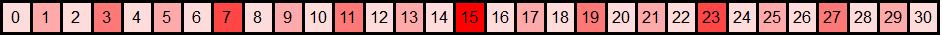
So, ideally, we’d want a memory layout where hot elements are grouped with hot elements, and cold elements are grouped with cold elements. And we can achieve this if we permute the array in a more cache-friendly way by renumbering them. The numeration we will use is actually half a millennium old, and chances are, you already know it.
#Eytzinger Layout
Michaël Eytzinger is a 16th-century Austrian nobleman known for his work on genealogy, particularly for a system for numbering ancestors called ahnentafel (German for “ancestor table”).
Ancestry mattered a lot back then, but writing down that data was expensive. Ahnentafel allows displaying a person’s genealogy compactly, without wasting extra space by drawing diagrams.
It lists a person’s direct ancestors in a fixed sequence of ascent. First, the person themselves is listed as number 1, and then, recursively, for each person numbered $k$, their father is listed as $2k$ and their mother as $(2k+1)$.
Here is the example for Paul I, the great-grandson of Peter the Great:
- Paul I
- Peter III (Paul’s father)
- Catherine II (Paul’s mother)
- Charles Frederick (Peter’s father, Paul’s paternal grandfather)
- Anna Petrovna (Peter’s mother, Paul’s paternal grandmother)
- Christian August (Catherine’s father, Paul’s maternal grandfather)
- Johanna Elisabeth (Catherine’s mother, Paul’s maternal grandmother)
Apart from being compact, it has some nice properties, like that all even-numbered persons are male and all odd-numbered (possibly except for 1) are female. One can also find the number of a particular ancestor only knowing the genders of their descendants. For example, Peter the Great’s bloodline is Paul I → Peter III → Anna Petrovna → Peter the Great, so his number should be $((1 \times 2) \times 2 + 1) \times 2 = 10$.
In computer science, this enumeration has been widely used for implicit (pointer-free) implementations of heaps, segment trees, and other binary tree structures — where instead of names, it stores underlying array items.
Here is how this layout looks when applied to binary search:
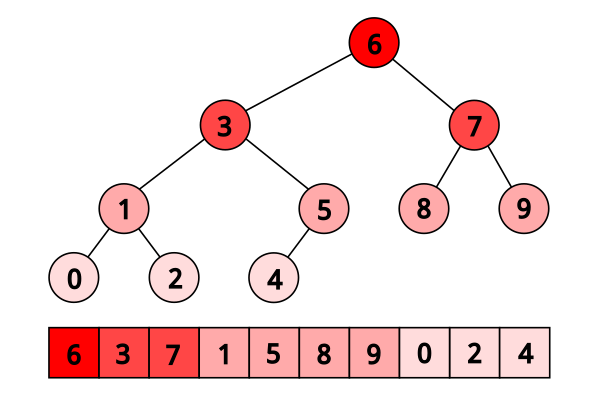
When searching in this layout, we just need to start from the first element of the array, and then on each iteration jump to either $2 k$ or $(2k + 1)$, depending on how the comparison went:
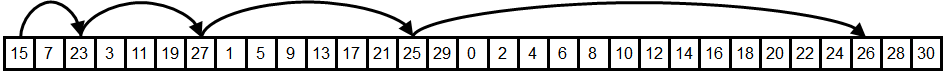
You can immediately see how its temporal locality is better (and, in fact, theoretically optimal) as the elements closer to the root are closer to the beginning of the array and thus are more likely to be fetched from the cache.
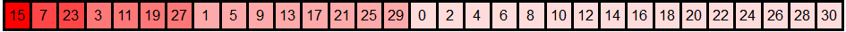
Another way to look at it is that we write every even-indexed element to the end of the new array, then write every even-indexed element of the remaining ones right before them, and so on, until we place the root as the first element.
#Construction
To construct the Eytzinger array, we could do this even-odd filtering $O(\log n)$ times — and, perhaps, this is the fastest approach — but for brevity, we will instead build it by traversing the original search tree:
int a[n], t[n + 1]; // the original sorted array and the eytzinger array we build
// ^ we need one element more because of one-based indexing
void eytzinger(int k = 1) {
static int i = 0; // <- careful running it on multiple arrays
if (k <= n) {
eytzinger(2 * k);
t[k] = a[i++];
eytzinger(2 * k + 1);
}
}
This function takes the current node number k, recursively writes out all elements to the left of the middle of the search interval, writes out the current element we’d compare against, and then recursively writes out all the elements on the right. It seems a bit complicated, but to convince yourself that it works, you only need three observations:
- It writes exactly
nelements as we enter the body ofiffor eachkfrom1tonjust once. - It writes out sequential elements from the original array as it increments the
ipointer each time. - By the time we write the element at node
k, we will have already written all the elements to its left (exactlyi).
Despite being recursive, it is actually quite fast as all the memory reads are sequential, and the memory writes are only in $O(\log n)$ different memory blocks at a time. Maintaining the permutation is both logically and computationally harder to maintain though: adding an element to a sorted array only requires shifting a suffix of its elements one position to the right, while Eytzinger array practically needs to be rebuilt from scratch.
Note that this traversal and the resulting permutation are not exactly equivalent to the “tree” of vanilla binary search: for example, the left child subtree may be larger than the right child subtree — up to twice as large — but it doesn’t matter much since both approaches result in the same $\lceil \log_2 n \rceil$ tree depth.
Also note that the Eytzinger array is one-indexed — this will be important for performance later. You can put in the zeroth element the value that you want to be returned in the case when the lower bound doesn’t exist (similar to a.end() for std::lower_bound).
#Search Implementation
We can now descend this array using only indices: we just start with $k=1$ and execute $k := 2k$ if we need to go left and $k := 2k + 1$ if we need to go right. We don’t even need to store and recalculate the search boundaries anymore. This simplicity also lets us avoid branching:
int k = 1;
while (k <= n)
k = 2 * k + (t[k] < x);
The only problem arises when we need to restore the index of the resulting element, as $k$ does not directly point to it. Consider this example (its corresponding tree is listed above):
array: 0 1 2 3 4 5 6 7 8 9
eytzinger: 6 3 7 1 5 8 9 0 2 4
1st range: ------------?------ k := 2*k = 2 (6 ≥ 3)
2nd range: ------?------ k := 2*k = 4 (3 ≥ 3)
3rd range: --?---- k := 2*k + 1 = 9 (1 < 3)
4th range: ?-- k := 2*k + 1 = 19 (2 < 3)
5th range: !
Here we query the array of $[0, …, 9]$ for the lower bound of $x=3$. We compare it against $6$, $3$, $1$, and $2$, go left-left-right-right, and end up with $k = 19$, which isn’t even a valid array index.
The trick is to notice that, unless the answer is the last element of the array, we compare $x$ against it at some point, and after we’ve learned that it is not less than $x$, we go left exactly once and then keep going right until we reach a leaf (because we will only be comparing $x$ against lesser elements). Therefore, to restore the answer, we just need to “cancel” some number of right turns and then one more.
This can be done in an elegant way by observing that the right turns are recorded in the binary representation of $k$ as 1-bits, and so we just need to find the number of trailing 1s in the binary representation and right-shift $k$ by exactly that number of bits plus one. To do this, we can invert the number (~k) and call the “find first set” instruction:
int lower_bound(int x) {
int k = 1;
while (k <= n)
k = 2 * k + (t[k] < x);
k >>= __builtin_ffs(~k);
return t[k];
}
We run it, and… well, it doesn’t look that good:
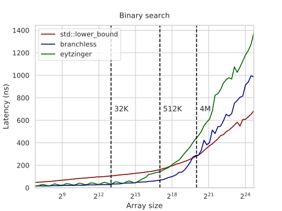
The latency on smaller arrays is on par with the branchless binary search implementation — which isn’t surprising as it is just two lines of code — but it starts taking off much sooner. The reason is that the Eytzinger binary search doesn’t get the advantage of spatial locality: the last 3-4 elements we compare against are not in the same cache line anymore, and we have to fetch them separately.
If you think about it deeper, you might object that the improved temporal locality should compensate for that. Before, we were using only about $\frac{1}{16}$-th of the cache line to store one hot element, and now we are using all of it, so the effective cache size is larger by a factor of 16, which lets us cover $\log_2 16 = 4$ more first requests.
But if you think about it more, you understand that this isn’t enough compensation. Caching the other 15 elements wasn’t completely useless, and also, the hardware prefetcher could fetch the neighboring cache lines of our requests. If this was one of our last requests, the rest of what we will be reading will probably be cached elements. So actually, the last 6-7 accesses are likely to be cached, not 3-4.
It seems like we did an overall stupid thing switching to this layout, but there is a way to make it worthwhile.
#Prefetching
To hide the memory latency, we can use software prefetching similar to how we did for branchless binary search. But instead of issuing two separate prefetch instructions for the left and right child nodes, we can notice that they are neighbors in the Eytzinger array: one has index $2 k$ and the other $(2k + 1)$, so they are likely in the same cache line, and we can use just one instruction.
This observation extends to the grand-children of node $k$ — they are also stored sequentially:
2 * 2 * k = 4 * k
2 * 2 * k + 1 = 4 * k + 1
2 * (2 * k + 1) = 4 * k + 2
2 * (2 * k + 1) + 1 = 4 * k + 3
Their cache line can also be fetched with one instruction. Interesting… what if we continue this, and instead of fetching direct children, we fetch ahead as many descendants as we can cramp into one cache line? That would be $\frac{64}{4} = 16$ elements, our great-great-grandchildren with indices from $16k$ to $(16k + 15)$.
Now, if we prefetch just one of these 16 elements, we will probably only get some but not all of them, as they may cross a cache line boundary. We can prefetch the first and the last element, but to get away with just one memory request, we need to notice that the index of the first element, $16k$, is divisible by $16$, so its memory address will be the base address of the array plus something divisible by $16 \cdot 4 = 64$, the cache line size. If the array were to begin on a cache line, then these $16$ great-great-grandchildren elements will be guaranteed to be on a single cache line, which is just what we needed.
Therefore, we only need to align the array:
t = (int*) std::aligned_alloc(64, 4 * (n + 1));
And then prefetch the element indexed $16 k$ on each iteration:
int lower_bound(int x) {
int k = 1;
while (k <= n) {
__builtin_prefetch(t + k * 16);
k = 2 * k + (t[k] < x);
}
k >>= __builtin_ffs(~k);
return t[k];
}
The performance on large arrays improves 3-4x from the previous version and ~2x compared to std::lower_bound. Not bad for just two more lines of code:
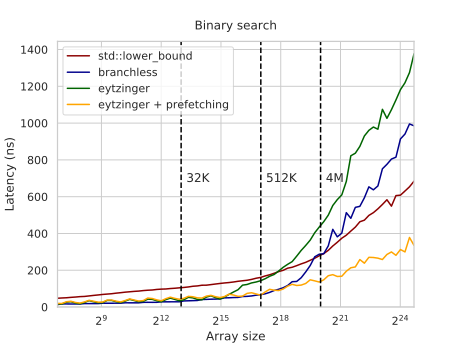
Essentially, what we do here is hide the latency by prefetching four steps ahead and overlapping memory requests. Theoretically, if the compute didn’t matter, we would expect a ~4x speedup, but in reality, we get a somewhat more moderate speedup.
We can also try to prefetch further than that four steps ahead, and we don’t even have to use more than one prefetch instruction for that: we can try to request only the first cache line and rely on the hardware to prefetch its neighbors. This trick may or may not improve actual performance — depends on the hardware:
__builtin_prefetch(t + k * 32);
Also, note that the last few prefetch requests are actually not needed, and in fact, they may even be outside the memory region allocated for the program. On most modern CPUs, invalid prefetch instructions get converted into no-ops, so it isn’t a problem, but on some platforms, this may cause a slowdown, so it may make sense, for example, to split off the last ~4 iterations from the loop to try to remove them.
This prefetching technique allows us to read up to four elements ahead, but it doesn’t really come for free — we are effectively trading off excess memory bandwidth for reduced latency. If you run more than one instance at a time on separate hardware threads or just any other memory-intensive computation in the background, it will significantly affect the benchmark performance.
But we can do better. Instead of fetching four cache lines at a time, we could fetch four times fewer cache lines. And in the next section, we will explore the approach.
#Removing the Last Branch
Just one finishing touch: did you notice the bumpiness of the Eytzinger search? This isn’t random noise — let’s zoom in:
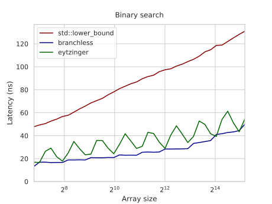
The latency is ~10ns higher for the array sizes in the form of $1.5 \cdot 2^k$. These are mispredicted branches from the loop itself — the last branch, to be exact. When the array size is far from a power of two, it is hard to predict whether the loop will make $\lfloor \log_2 n \rfloor$ or $\lfloor \log_2 n \rfloor + 1$ iterations, so we have a 50% chance to suffer exactly one branch mispredict.
One way to address it is to pad the array with infinities to the closest power of two, but this wastes memory. Instead, we get rid of that last branch by always executing a constant minimum number of iterations and then using predication to optionally make the last comparison against some dummy element — that is guaranteed to be less than $x$ so that its comparison will be canceled:
t[0] = -1; // an element that is less than x
iters = std::__lg(n + 1);
int lower_bound(int x) {
int k = 1;
for (int i = 0; i < iters; i++)
k = 2 * k + (t[k] < x);
int *loc = (k <= n ? t + k : t);
k = 2 * k + (*loc < x);
k >>= __builtin_ffs(~k);
return t[k];
}
The graph is now smooth, and on small arrays, it is just a couple of cycles slower than the branchless binary search:
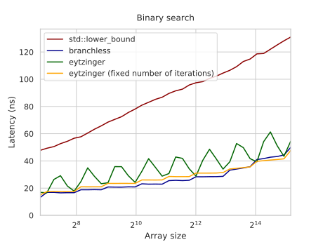
Interestingly, now GCC fails to replace the branch with cmov, but Clang doesn’t. 1-1.
#Appendix: Random Binary Search
By the way, finding the exact expected number of comparisons for random binary search is quite an interesting math problem in and of itself. Try solving it yourself first!
The way to compute it algorithmically is through dynamic programming. If we denote $f_n$ as the expected number of comparisons to find a random lower bound on a search interval of size $n$, it can be calculated from the previous $f_n$ by considering all the $(n - 1)$ possible splits:
$$ f_n = \sum_{l = 1}^{n - 1} \frac{1}{n-1} \cdot \left( f_l \cdot \frac{l}{n} + f_{n - l} \cdot \frac{n - l}{n} \right) + 1 $$ Directly applying this formula gives us an $O(n^2)$ algorithm, but we can optimize it by rearranging the sum like this: $$ \begin{aligned} f_n &= \sum_{i = 1}^{n - 1} \frac{ f_i \cdot i + f_{n - i} \cdot (n - i) }{ n \cdot (n - 1) } + 1 \\ &= \frac{2}{n \cdot (n - 1)} \cdot \sum_{i = 1}^{n - 1} f_i \cdot i + 1 \end{aligned} $$ To update $f_n$, we only need to calculate the sum of $f_i \cdot i$ for all $i < n$. To do that, let’s introduce two new variables: $$ g_n = f_n \cdot n, \;\; s_n = \sum_{i=1}^{n} g_n $$ Now they can be sequentially calculated as: $$ \begin{aligned} g_n &= f_n \cdot n = \frac{2}{n-1} \cdot \sum_{i = 1}^{n - 1} g_i + n = \frac{2}{n - 1} \cdot s_{n - 1} + n \\ s_n &= s_{n - 1} + g_n \end{aligned} $$ This way we get an $O(n)$ algorithm, but we can do even better. Let’s substitute $g_n$ in the update formula for $s_n$: $$ \begin{aligned} s_n &= s_{n - 1} + \frac{2}{n - 1} \cdot s_{n - 1} + n \\ &= (1 + \frac{2}{n - 1}) \cdot s_{n - 1} + n \\ &= \frac{n + 1}{n - 1} \cdot s_{n - 1} + n \end{aligned} $$ The next trick is more complicated. We define $r_n$ like this: $$ \begin{aligned} r_n &= \frac{s_n}{n} \\ &= \frac{1}{n} \cdot \left(\frac{n + 1}{n - 1} \cdot s_{n - 1} + n\right) \\ &= \frac{n + 1}{n} \cdot \frac{s_{n - 1}}{n - 1} + 1 \\ &= \left(1 + \frac{1}{n}\right) \cdot r_{n - 1} + 1 \end{aligned} $$ We can substitute it into the formula we got for $g_n$ before: $$ g_n = \frac{2}{n - 1} \cdot s_{n - 1} + n = 2 \cdot r_{n - 1} + n $$ Recalling that $g_n = f_n \cdot n$, we can express $r_{n - 1}$ using $f_n$: $$ f_n \cdot n = 2 \cdot r_{n - 1} + n \implies r_{n - 1} = \frac{(f_n - 1) \cdot n}{2} $$ Final step. We’ve just expressed $r_n$ through $r_{n - 1}$ and $r_{n - 1}$ through $f_n$. This lets us express $f_{n + 1}$ through $f_n$: $$ \begin{aligned} &&\quad r_n &= \left(1 + \frac{1}{n}\right) \cdot r_{n - 1} + 1 \\ &\Rightarrow & \frac{(f_{n + 1} - 1) \cdot (n + 1)}{2} &= \left(1 + \frac{1}{n}\right) \cdot \frac{(f_n - 1) \cdot n}{2} + 1 \\ &&&= \frac{n + 1}{2} \cdot (f_n - 1) + 1 \\ &\Rightarrow & (f_{n + 1} - 1) &= (f_{n} - 1) + \frac{2}{n + 1} \\ &\Rightarrow &f_{n + 1} &= f_{n} + \frac{2}{n + 1} \\ &\Rightarrow &f_{n} &= f_{n - 1} + \frac{2}{n} \\ &\Rightarrow &f_{n} &= \sum_{k = 2}^{n} \frac{2}{k} \end{aligned} $$The last expression is double the harmonic series, which is well known to approximate $\ln n$ as $n \to \infty$. Therefore, the random binary search will perform $\frac{2 \ln n}{\log_2 n} = 2 \ln 2 \approx 1.386$ more comparisons compared to the normal one.
#Acknowledgements
The article is loosely based on “Array Layouts for Comparison-Based Searching” by Paul-Virak Khuong and Pat Morin. It is 46 pages long and discusses these and many other (less successful) approaches in more detail. I highly recommend also checking it out — this is one of my favorite performance engineering papers.
Thanks to Marshall Lochbaum for providing the proof for the random binary search. No way I could do it myself.
I also stole these lovely layout visualizations from some blog a long time ago, but I don’t remember the name of the blog and what license they had, and inverse image search doesn’t find them anymore. If you don’t sue me, thank you, whoever you are!